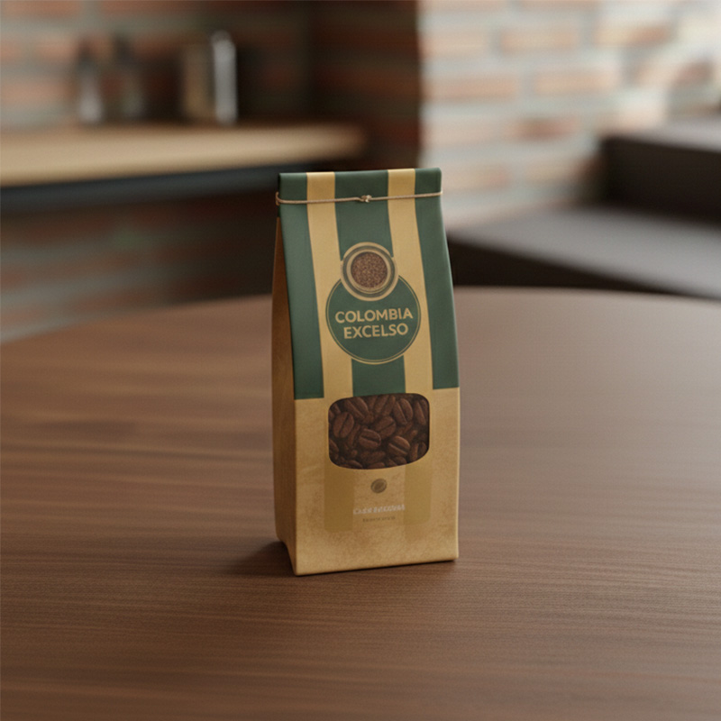
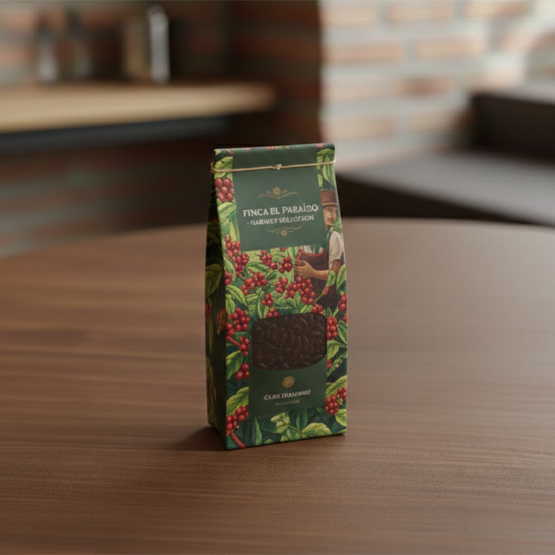
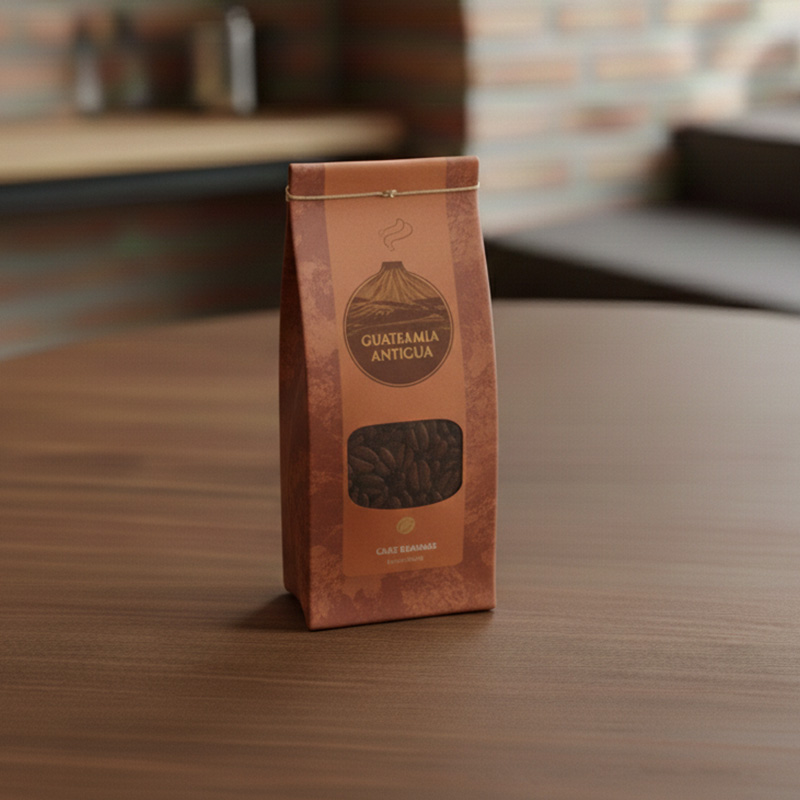
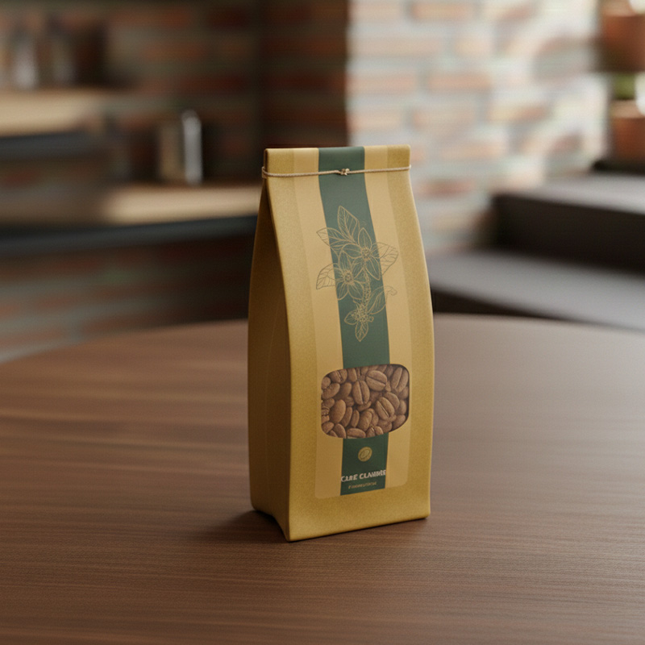
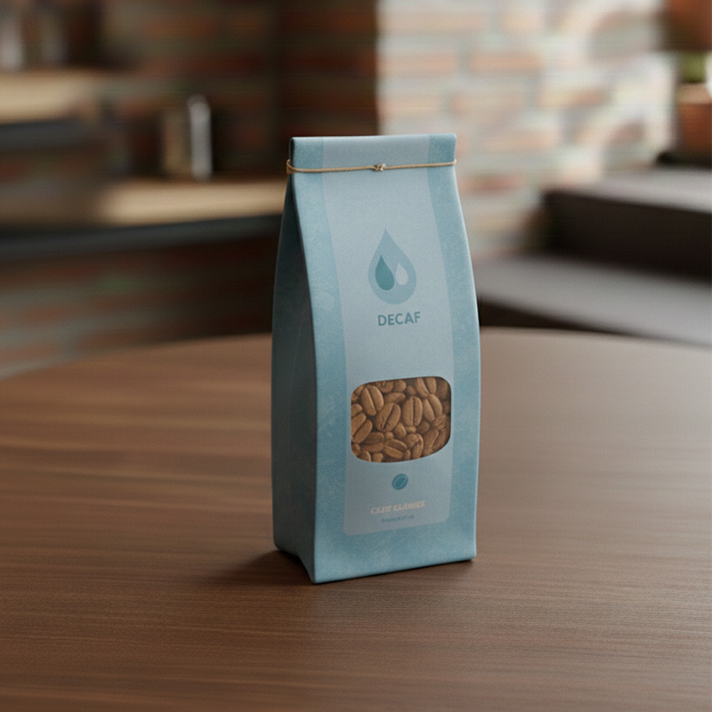
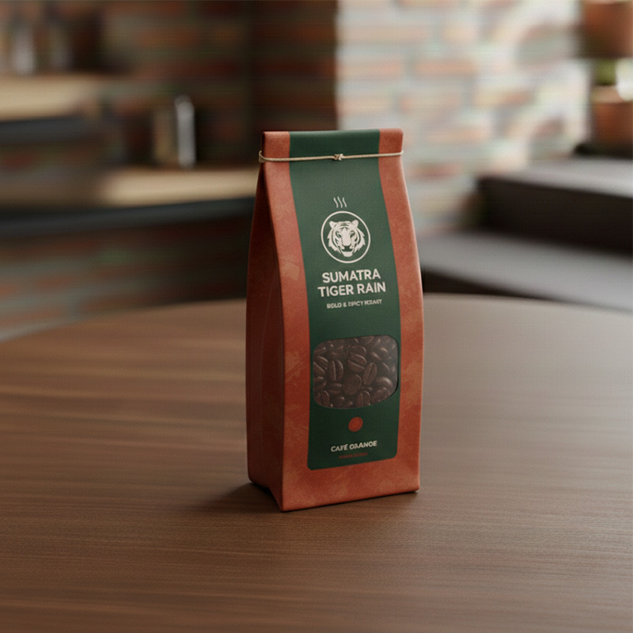

Colombia Excelso
El equilibrio perfecto.
Un clásico equilibrado con notas de caramelo y una acidez cítrica brillante.
Ideal para el día a día.
Perfil: Equilibrado y clásico.
250g - 9,50€
500g - 17,90€

Finca El Paraíso
Tradición en cada grano.
Cuerpo robusto y sedoso con matices de frutos secos. El sabor de la tradición artesanal.
Perfil: Cuerpo robusto y artesanal.
250g - 12,50€
500g - 23,00€

Guatemala Antigua
Fuerza volcánica.
Café intenso y complejo con sutiles notas ahumadas y chocolate amargo. Carácter volcánico.
Perfil: Cuerpo robusto y artesanal.
250g - 10,90€
500g - 20,50€

Botanical Selection
Fuerza volcánica.
Café delicado y refrescante con aromas a jazmín y frutas cítricas. Elegancia floral.
Perfil: Floral y delicado.
250g - 13,00€
500g - 24,50€

Pure Decaf
Fuerza volcánica.
Todo el aroma y cuerpo del mejor café con notas de cacao, pero 100% libre de cafeína.
Perfil: Suave y relajante.
250g - 11,00€
500g - 20,90€

Sumatra Tiger Rain
Fuerza volcánica.
Exótico y potente. Un café con notas terrosas, baja acidez y una personalidad salvaje.
Perfil: Terroso y exótico.
250g - 14,50€
500g - 27,00€